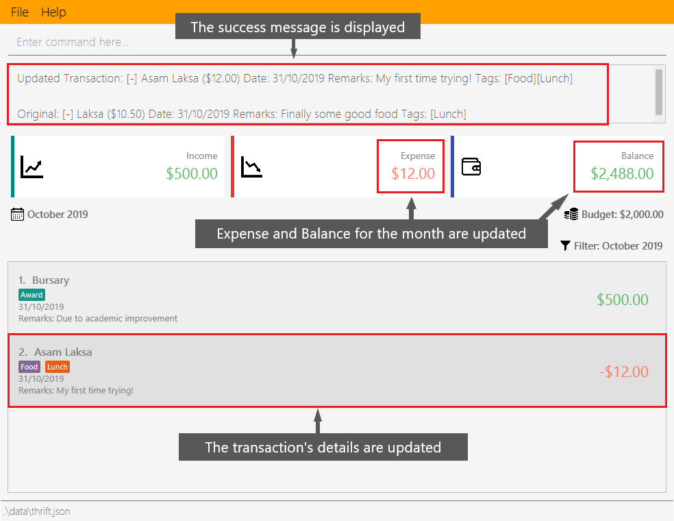

Summary of contributions
-
Major enhancement:
-
What it does:
-
Justification:
-
Highlights:
-
Credits: {mention here if you reused any code/ideas from elsewhere or if a third-party library is heavily used in the feature so that a reader can make a more accurate judgement of how much effort went into the feature}
-
-
Minor enhancement:
-
Code contributed:
-
Other contributions:
Contributions to the User Guide
Given below are sections I contributed to the User Guide. They showcase my ability to write documentation targeting end-users. |
Updating a transaction’s details: update
Made a mistake when creating a transaction? Have new details for an existing transaction? Simply utilize THRIFT’s update feature to make changes.
Command Syntax:
update i/INDEX [n/NEW_NAME] [v/NEW_VALUE] [r/NEW_REMARK] [t/NEW_TAG] …
Here is an explanation for the update command:
Example Usage:
You order a bowl of delicious Laksa and key in the details of this food expense into THRIFT. However, after your meal you realize you recorded some incorrect details - the Laksa was Asam Laksa, not Curry Laksa as you thought, and you paid more than the menu price (which you recorded) due to taxes. You also want to add a remark and tag.
Fortunately, you can easily update such details in THRIFT. Here is what you do from beginning to end:
-
You initially have a "Curry Laksa" expense in THRIFT. It is at index 2 in the list.

-
When you realize the Laksa is not Curry Laksa and want to change the transaction’s name, you type update i/2 n/Laksa into the command box and press Enter.

-
You should see that the "Curry Laksa" transaction’s name is updated to "Laksa". The status message also tells you what the original transaction was.

-
Later on, you want to change the name and value, as well as add a remark and tag. You type:
update i/2 n/Asam Laksa v/12 r/My first time trying! t/Food t/Lunch
and press Enter.
-
You can see the updated details of the transaction at index 2. The status message tells you what the original transaction was. The transaction month’s Expense and Balance trackers are also updated.

Cloning a transaction: clone
Occasionally, you may want to copy a transaction, or create multiple copies of a transaction for recurring incomes or expenses such as a yearly donation or monthly bills. Simply use the clone feature to achieve this.
Command syntax:
clone i/INDEX [o/FREQUENCY:NUMBER_OF_OCCURRENCES]
The following is an explanation for the clone command:
Example usage:
You receive your fixed salary on the 30th of every month. You don’t want to tediously add your salary to THRIFT every month, so you add clones of your salary income for the next year at one go.
You do the following on 30 November 2019:
| The following example uses the displayed list of all existing transactions. |
-
You have the salary income entry you received on 30/11/2019 in the list. It is at index 4.

-
To create clones of the 30 November 2019 salary income for the next 12 months from 30 December 2019 up to 30 November 2020, you type clone i/4 o/monthly:12 and press Enter.
-
You can see that 12 clones of the transaction at index 4 are created.

Contributions to the Developer Guide
Given below are sections I contributed to the Developer Guide. They showcase my ability to write technical documentation and the technical depth of my contributions to the project. |
PROJECT: PowerPointLabs
{Optionally, you may include other projects in your portfolio.}